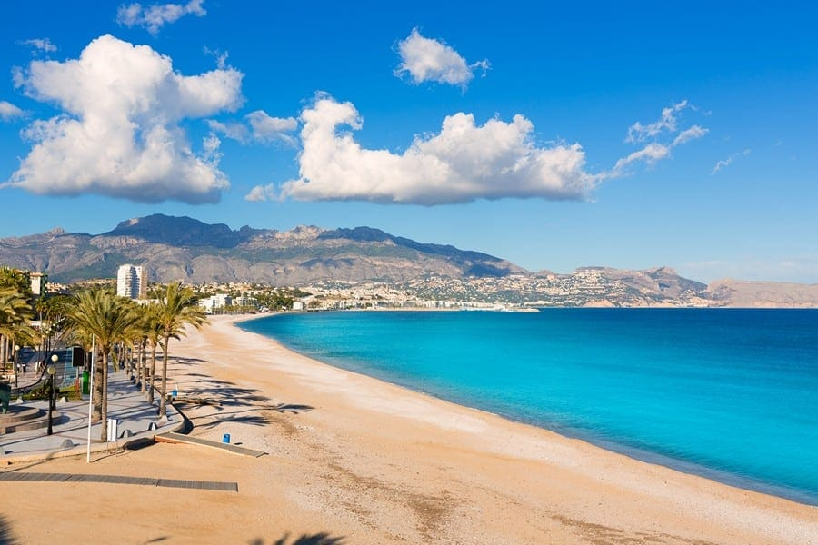

Tursitländer
anmält om turistländer
Turistställen runt om i världen varierar mycket, men de har ofta gemensamma drag som lockar människor att resa långt för att uppleva dem. Det kan handla om vacker natur, spännande kultur, historiska byggnader eller moderna nöjen. Oavsett om det är en livlig storstad eller en lugn strand, erbjuder turistmål något unikt som gör att människor vill återvända.

Marbella är ett av Spaniens mest kända turistmål och ligger på Costa del Sol i regionen Andalusien. Staden lockar besökare från hela världen med sitt behagliga klimat, sina stränder och en blandning av lyx och traditionell spansk charm. En av de största attraktionerna är de långa sandstränderna som sträcker sig längs kusten. Här finns både lugna familjestränder och mer exklusiva beach clubs där turister kan njuta av sol, bad och god mat. Marbella är också känt för sin lyxiga marina, Puerto Banús, där man kan se stora yachter, exklusiva butiker och ett livligt nattliv.